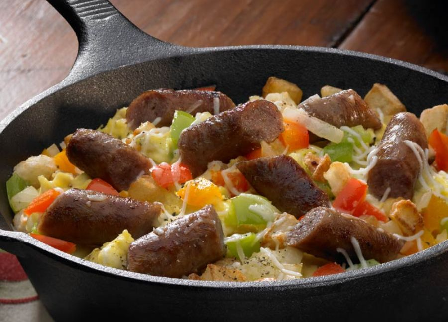

Dad's Famous Breakfast Skillet

East Breakfast Skillet
Enjoy a delicious restaurant-style breakfast skillet in the comfort of your own home!
Johnsonville Original Recipe Breakfast Sausage Links are the perfect ingredient,
along with a fantastic combination of peppers, potatoes, eggs and Italian cheese for an early morning boost!
Ingredients
- 1 package (12 ounces) JOHNSONVILLE Original Recipe Breakfast Sausage Links
- 2 tablespoons olive oil, divided
- 2 cups frozen Southern-style hash brown potatoes
- 1/2 cup chopped red bell pepper
- 1/2 cup chopped green bell pepper
- 1/2 cup chopped yellow bell pepper
- 1/2 cup chopped onion
- 8 eggs
- 1/2 cup milk
- 1/2 teaspoon salt
- 1/2 teaspoon dried oregano
- 1/4 teaspoon fresh ground pepper
- 1/2 cup shredded Italian blend cheese
Steps
- Prepare sausage links according to package directions. Drain, allow to cool slightly and cut into thirds.
- In a skillet, heat 1 tablespoon of oil and fry potatoes until golden; remove from pan and set aside. Add remaining oil to skillet, cook and stir peppers and onions until crisp-tender: about 4 minutes.
- In a large bowl, whisk the eggs, milk, salt, oregano and pepper. Pour egg mixture into skillet with vegetables. Cook over medium heat, stirring occasionally, until eggs are set; 10-15 minutes.
- Gently stir in sausage and potatoes. Sprinkle with cheese, remove from heat; cover for 1-2 minutes or until cheese has melted.